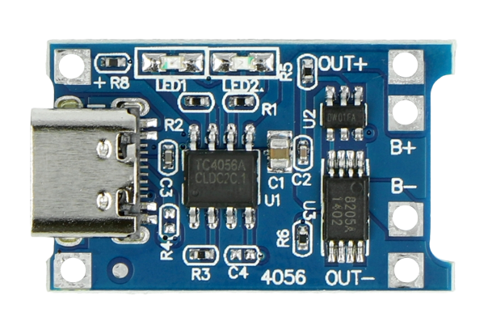
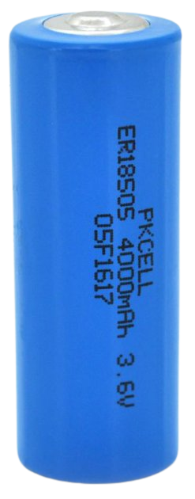
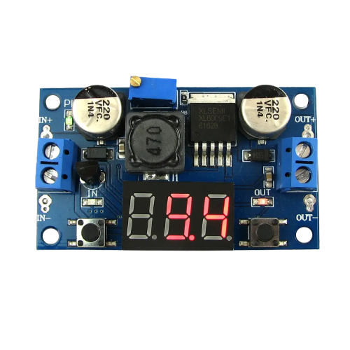
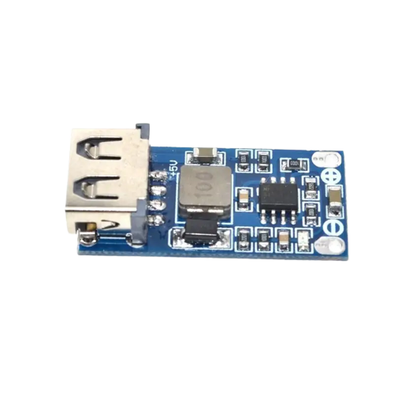
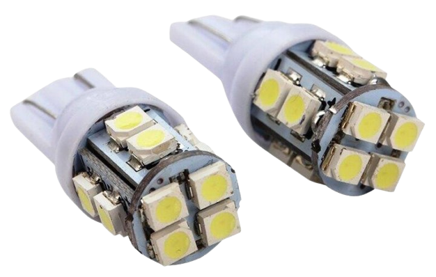

| НАЗВА | ФОТО | ЦІНА | ВЛАСТИВОСТІ | ДЕ ВЗЯТИ |
| Плата заряду та контролю акумуляторами на основі мікроконтроллера tp4056 |  | 10-30 грн (залежно від площадки торгівлі) | Вміє заряджати та обергати акумулятори що підключені до неї | Дана плата не є рідкісною, купити можна як на радіоринку, так і в інтернеті |
| Li-ion Акумулятори номіналом 3.6V |  | 0-300 грн (залежно від ємності та площадки торгівлі) | Зберігає енергію. Кожен має свою ємність, нам підійде люба(від неї буде залежати час роботи) | Їх легко дістати з любого пристрою, від використаних електронних сигарет до старих непрацюючих акумуляторів з ноутбуку, звісно їх можна і придбати в інтернеті, але ціна на них зросла в рази |
| DC-DC Повишаючий перетворювач напруги з регулятором |  | 20-100 грн (залежно від типу та площадки торгівлі) | Підвищує та стабілізує напругу з акумуляторів (вихідну напругу можна регулювати). Бувають різної потужності, з екраном або без (нам найбільше підійде з ним та вхідною напругою від 3V) | Дана плата також не є рідкісною, купити можна як на радіоринку, так і в інтернеті |
| DC-DC Повишаючий перетворювач напруги з usb портом |  | 20-40 грн (залежно від площадки торгівлі) | Підвищує та стабілізує напругу з акумуляторів до 5V | Дана плата також не є рідкісною, купити можна як на радіоринку, так і в інтернеті |
| LED лампа 12V 5W |  | 25 грн | Яскрава лампа що підходить під нашу схему | подібні можна знайти де завгодно, головне щоб напруга була близько 12V конкретно цю можна купити тут |